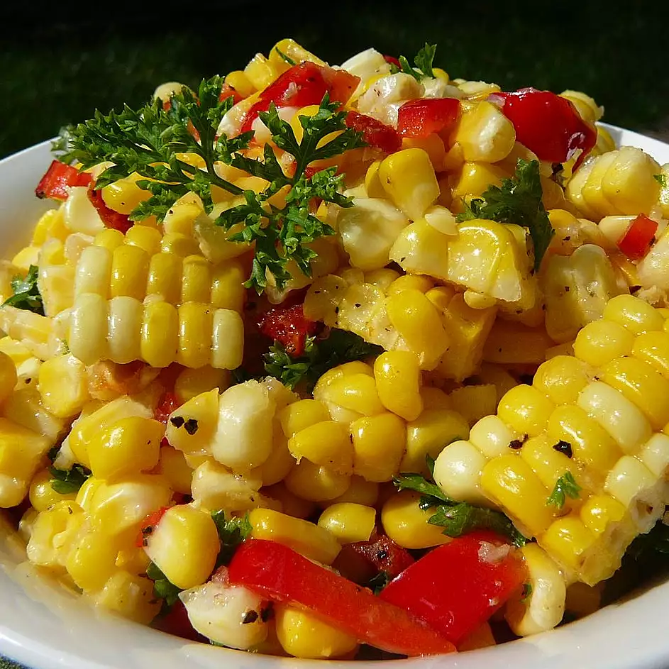

Corn Off the Cob Salad

Description
This summer salad of grilled corn, red pepper, and sun-dried tomatoes is great served warm or at room temperature. It has lots of flavor!
Ingredients
- 6 ears white corn, husked and cleaned
- 3 tablespoons melted butter
- ⅓ cup fresh lime juice
- ½ red bell pepper, diced
- 4 sun-dried tomatoes (not packed in oil), snipped into small pieces
- 1 tablespoon kosher salt, or to taste
- 1 teaspoon cracked black pepper
- 2 tablespoons chopped fresh parsley
- 2 tablespoons garlic powder
Steps
- Preheat an outdoor grill for medium-high heat.
- Grill corn on preheated grill until the kernels are tender and have browned in spots, about 8 minutes. Set aside to until cool enough to handle.
- Whisk together the melted butter and lime juice in a large bowl. Slice the kernels off of the corn and place into the bowl along with the red pepper and sun-dried tomatoes. Season with salt, pepper, parsley, and garlic powder. Toss until well combined.